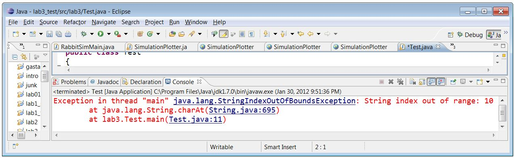

Exceptions
As you experiment, you may try things that cause errors. Java uses exceptions for reporting and handling errors. For now, all we need to understand is how to interpret the exceptions that are reported by the Java runtime when something goes wrong.
Here is a good example. Create the following class and run it:
package lab3;
public class Test
{
public static void main(String[] args)
{
String s = "Hello";
char c = s.charAt(10);
System.out.println(s);
}
}
In the second line of main, we are asking for the 10th character in a 5-letter string. The error is reported to us using an object called an exception. Since we didn't do anything special to handle the error, the program ends and the exception is reported to us in the console output:

In the first line of output you can see the name of the exception type, in this case StringIndexOutOfBoundsException. The name usually tells you what went wrong.
The remaining lines of the message are a stack trace showing exactly where the error occurred. To read a stack trace, start at the top:
- The
charAtmethod, at the top of the list, is what directly generated the exception. Ok, but we don't expect to find our error there, because that's part of the Java libraries. - The next line shows that
charAtwas called frommain, which is code we wrote. That's where we should start looking for the error. The text in blue,Test.java:11tells us that the failed call tocharAthappened on line 11 ofTest.java. In fact that text is a hyperlink, and if you click on it, the editor will open on exactly that line of code.
To interpret an exception message (stack trace), start reading it at the top. Skip over code from the Java libraries. When until you recognize a class whose code you wrote, start looking for the problem at the indicated line number.